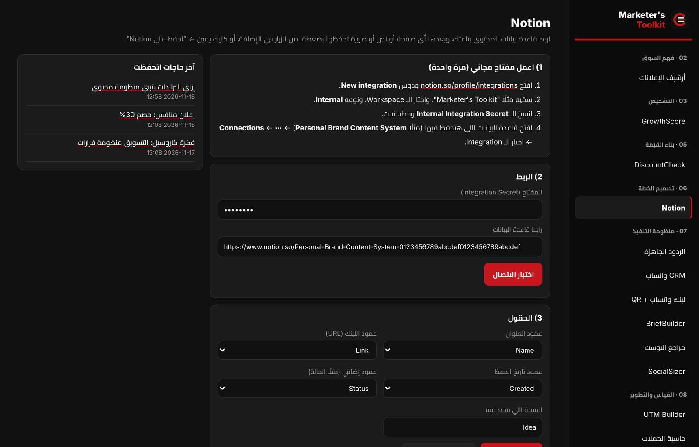

06 · Strategic Plan Design / تصميم الخطة
IdeaDrop
احفظ أي فكرة على Notion بضغطة
أي صفحة أو نص أو صورة عجبتك، احفظها في قاعدة بيانات المحتوى على Notion، من الأيقونة أو بكليك يمين. وبتتحفظ معاها ملاحظتك واللينك وتاريخ الحفظ.
كليك يمين ← احفظ على Notion
النص المحدد + الصورة + اللينك
بيملا أعمدة الحالة والتاريخ
مفتاح Notion مجاني
شكلها · Preview
كده بتشتغل.

الصلاحيات · Permissions
بتطلب إيه وليه.ولا صلاحية زيادة عن اللزوم.
storageبتحفظ إعداداتك وبياناتك على جهازك إنت بسcontextMenusبتضيف اختيار في قايمة كليك يمينactiveTabبتوصل للتاب الحالي بس لما تدوس على الأيقونةscriptingبتقرا الصفحة اللي إنت فاتحها، ولما تدوس الزرار بسapi.notion.comعشان تبعت الفكرة لقاعدة بيانات Notion بتاعتك إنت بسأدوات تانية